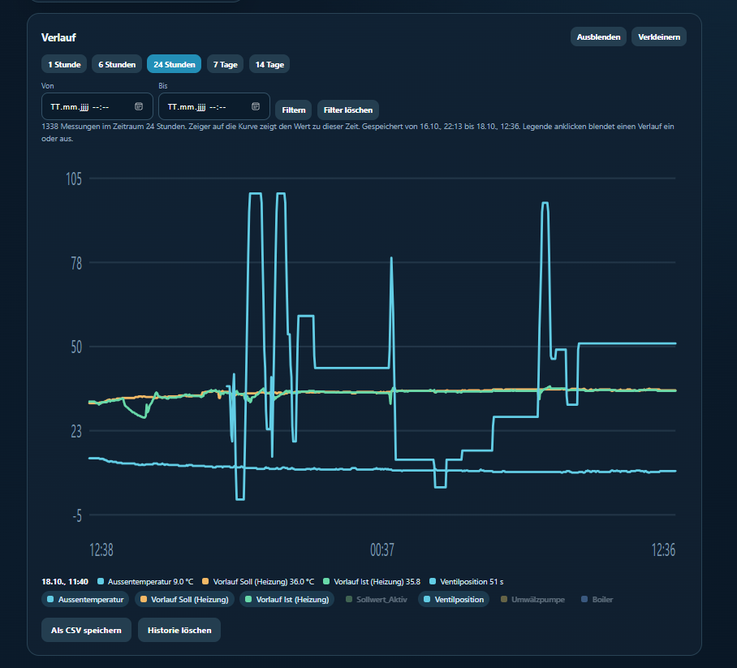
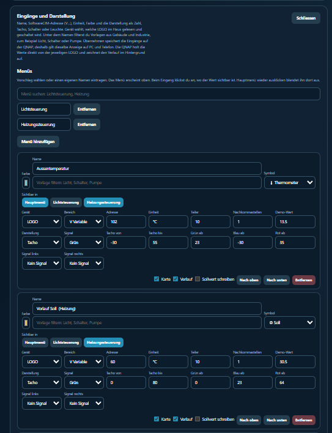
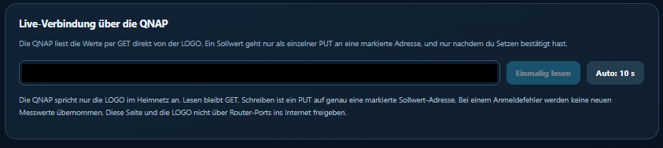
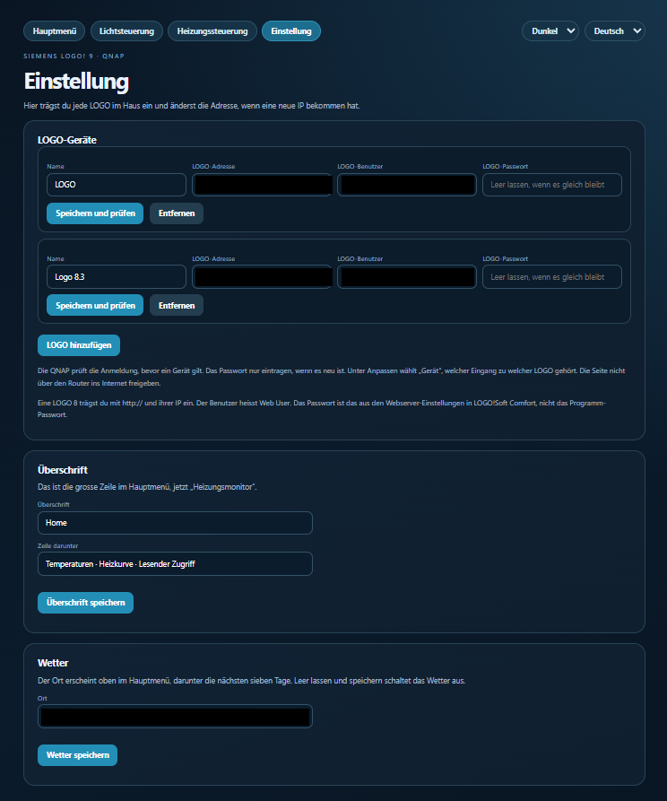
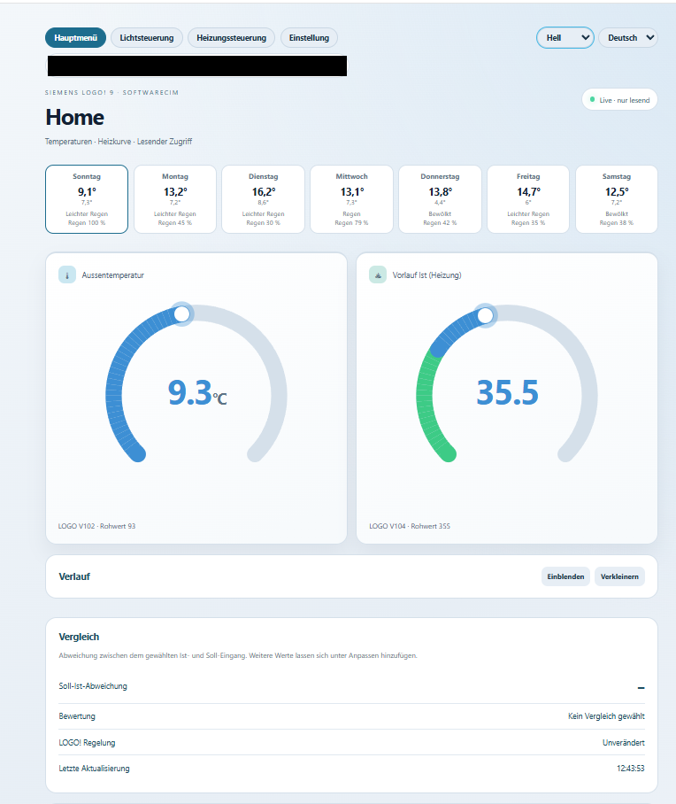

Werte im Blick
Temperaturanzeigen, Soll- und Istwerte sowie Zustände in einer anpassbaren Oberfläche.
Temperaturen, Anlagenzustände und Verläufe im Browser – mit deinem eigenen Heizungsmonitor im lokalen Netzwerk.
Container-Paket ansehen ↗Inoffizielle Drittsoftware für Siemens LOGO!. Gedacht für den privaten Einsatz und zum eigenen Anpassen.
Temperaturanzeigen, Soll- und Istwerte sowie Zustände in einer anpassbaren Oberfläche.
Aufzeichnungen und CSV-Export helfen dir, die Werte deiner Anlage nachzuvollziehen.
Die Programmoberfläche unterstützt Deutsch, Französisch, Englisch und Italienisch.
Diese Webseite stellt nur Dateien bereit. Sie zeigt keine Live-Daten und besitzt keine Verbindung zur Heizungssteuerung. Das heruntergeladene Programm wird im eigenen lokalen Netzwerk eingerichtet.
Originalaufnahmen aus der eigenen Anlage. Die gezeigten Werte sind Momentaufnahmen; diese Bilder sind nicht mit der Heizung verbunden. Die Programmoberfläche ist hier auf Deutsch abgebildet.
Bei den zusätzlich gezeigten Aufnahmen wurden private Angaben mit deckenden Balken entfernt. Alle übrigen Bildpixel bleiben unverändert.
Sollwert, Ventilposition, Umwälzpumpe und Boiler in einer Ansicht.
Bild in voller Größe öffnen ↗
Temperaturen und weitere Messwerte mit Zeitraumwahl und CSV-Export.
Bild in voller Größe öffnen ↗
Messadressen, Einheiten und Darstellung passend zur eigenen Anlage einstellen.
Bild in voller Größe öffnen ↗
Ansicht der lokalen Geräteverbindung. Netzwerkadressen sind dauerhaft geschwärzt.
Bild in voller Größe öffnen ↗
Geräteverwaltung, Überschrift und Wetteroptionen. IP-Adressen, Benutzernamen und Wetterort sind dauerhaft geschwärzt.
Bild in voller Größe öffnen ↗
Die helle Programmoberfläche als Alternative zum dunklen Design. Die Wetterzeile mit Ortsangabe ist dauerhaft geschwärzt.
Bild in voller Größe öffnen ↗ZIP herunterladen und auf dem Zielsystem in einen eigenen Programmordner entpacken.
Für QNAP in docker-compose.qnap.yml den absoluten Paketpfad eintragen. Eine separate Anwendung erstellen; Port 8092 muss frei sein.
Die lokale Serveradresse mit Port 8092 öffnen. Eigenes Anzeigen-Passwort und eigene LOGO!-Zugangsdaten eintragen.
Messadressen und Skalierung auf die eigene Anlage abstimmen. Zuerst lesend testen; Sollwertänderungen erst nach geprüfter Zuordnung verwenden.
Container-Vorschau · Paketstand 18.10.2026. Enthält Python-Quellcode, Weboberfläche und Container-Konfiguration. Keine persönlichen Einstellungen oder Messarchive.
Container-ZIP herunterladen ↓Entwicklerprojekt ohne Garantie. Eine Nutzungslizenz und Kontaktangaben können später ergänzt werden.